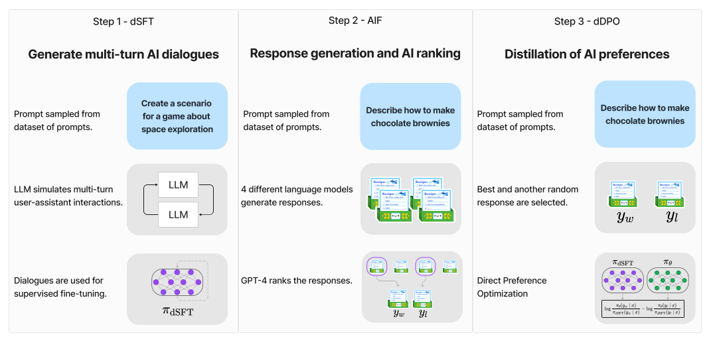
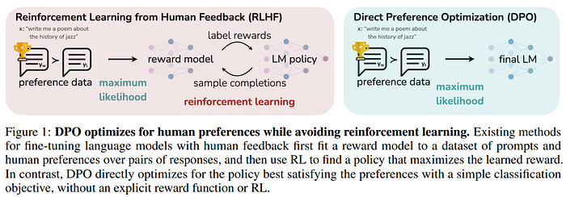

import os
import datetime
from copy import deepcopy
from random import randrange
from functools import partial
import torch
import accelerate
import bitsandbytes as bnb
from datasets import load_dataset
from transformers import (
AutoModelForCausalLM,
AutoTokenizer,
BitsAndBytesConfig,
TrainingArguments,
Trainer,
DataCollatorForLanguageModeling
)
from peft import (
LoraConfig,
prepare_model_for_kbit_training,
get_peft_model,
PeftModel
)
from wandb.sdk.data_types.trace_tree import TraceWhat is Zypher7B?
Zephyr-7B comprises two models created by the Hugging Face 4 team, derived from the well-known Mistral-7B model: Zephyr-7B-α and Zephyr-7B-β. These models not only outperform the Mistral-7B models but also exhibit performance comparable to LLaMA2-Chat-70B, which are models ten times their size.

How it works?
More details can be found in the Zephyr: Direct Distillation of LM Alignment. 
Distilled supervised fine-tuning (dSFT)
SFT, serving as the initial training phase for instructive/chat models, necessitates an instruction dataset, comprising pairs of instructions or questions alongside responses provided by humans. However, the primary challenge lies in the high cost associated with collecting such a dataset, given the requirement for human labor. An increasingly prevalent and cost-effective alternative is to utilize instruction datasets generated by other Large Language Models (LLMs).
We can find many such instruction datasets on the Hugging Face Hub that we can use for SFT, for instance:
- OpenAssistant Conversations Dataset (OASST1) (84.4k training examples)
- OpenOrca (4.2M training examples)
- openassistant-guanaco (9.8k training examples)
For Zephyr 7B Beta, Hugging Face fine-tuned Mistral 7B on a custom version of Ultrachat that they aggressively filtered: - HuggingFaceH4/ultrachat_200k (MIT license), use the “sft” splits
AI feedback (AIF)
For alignment with humans, we need a dataset of prompts paired with ranked answers. It’s common to use human feedback to align LLMs. Zephyr, however, uses AI feedback (AIF) since ranking models’ answers is an expensive task requiring human labor.
Starting with a collection of 4 different models like Claude, Llama, Falcon, etc, each prompt is fed through all 4 models to produce text. The teacher model, GPT-4, then gives a score for each produced text. The highest score of the 4 responses is called \(y_w\) and a random lower-scoring response is called \(y_l\) Thus, from a list of prompts \(\{x_1, ..., x_j\}\), we derive a dataset D = \(\{(x_1, y_1^w, y_1^l), ..., (x_j, y_j^w, y_j^l)\}\). These are 3-tuples of prompts with a stronger and a weaker response.
For this step, Hugging Face directly used the dataset UltraFeedback.
UltraFeedback contains 74k prompts paired with responses generated by the following models:
- LLaMA-2–7B-chat, LLaMA-2–13B-chat, LLaMA-2–70B-chat
- UltraLM-13B, UltraLM-65B
- WizardLM-7B, WizardLM-13B, WizardLM-70B
- Vicuna-33B
- Alpaca-7B
- Falcon-40B-instruct
- MPT-30B-chat
- StarChat-Beta
- Pythia-12B
Each LLM’s output is rated by GPT-4 with a score from 1 to 5 (higher is better) for various criteria:
- instruction following
- helpfulness
- honesty
- truthfulness
Distilled direct preference optimization (dDPO)
Instruct Large Language Models (LLMs), such as chat models, are commonly trained using Reinforcement Learning with Human Feedback (RLHF), employing a technique called Proximal Policy Optimization (PPO). While RLHF effectively aligns LLMs with human preferences, it comes with challenges of instability and complexity. To address these issues, a two-step training process is employed before running RLHF:
- Reference Model Training: A reference model is initially trained using Supervised Fine-Tuning (SFT) on an instruction dataset.
- Reward Model Training: A reward model is trained to predict human preferences. This involves using training data where humans rank the outputs of models for a given prompt. The reward model is then trained to predict these rankings.
After these preliminary steps, RLHF involves the use of four different models:
- Reference Model (SFT): The model trained using SFT on the instruction dataset.
- Reward Model: The model trained to predict human preferences based on ranked outputs.
- Value Model: Typically initialized by the reward model, the value model is an additional component in RLHF.
- Policy Model: The model (policy) that undergoes training with RLHF. It is typically initialized by the reference model. Using all these models, RLHF uses RL to optimize a language model policy to produce responses with a high reward (according to the reward model) without drifting excessively far from the original reference model. This multi-step approach, involving reference model training, reward model training, and the use of multiple models in RLHF, is designed to enhance the stability and effectiveness of instruct LLMs, aligning them more closely with human preferences.
DPO is a simple alternative to RLHF. It implicitly optimizes the same objective as existing RLHF algorithms (reward maximization with a KL-divergence constraint). The authors of DPO demonstrate that the constrained reward maximization problem can be exactly optimized by solving a much simpler classification problem on human preferences. DPO is lightweight and is more stable according to the authors. The Zephyr authors call this dDPO because the dataset is distilled from earlier steps, leveraging an AI to provide preference labels.
Since it can be reduced to a classification problem, DPO trains the model using a simple binary cross-entropy objective. DPO completely eliminates the need for reinforcement learning.
Given a prompt and several LLMs’ outputs ranked by humans according to their quality, DPO trains the model to assign a higher reward to the best outputs.
DPO only requires two models: - The reference model fine-tuned with SFT on instruct datasets - The base model that we want to train with DPO

Finetuning Zypher-7B
- transformers: is HuggingFace’s most popular library and their hub for models and training, evaluation, preprocessing, and other pipeline components.
- datasets gives us the power to load in any dataset from the dataset hub.
- peft is HuggingFace’s parameter-efficient fine-tuning library, especially useful for LLMs and limited hardware.
- trl is HuggingFace’s RL training library for language models.
- accelerate is for distributed configuration and accelerating your PyTorch script.
- bitsandbytes is an HuggingFace-integrated library for quantization functions to help with reducing our memory footprint.
Since we will download the quite big model directly from the Hugging Face Hub, we should configure the environment of TRANSFORMERS_CACHE to a folder with enough space.
import os
os.environ['TRANSFORMERS_CACHE'] = "./cache"We’ll be using W&B to log our experiments. You can create a free account at https://wandb.ai.
import wandb
wandb.login()Let’s first define the model, then load and preprocess the dataset. We will use a sharded Zephyr 7B to save memory.
model_name = "anakin87/zephyr-7b-alpha-sharded"
tokenizer = AutoTokenizer.from_pretrained(model_name)🐏Bits and Bytes Config & Loading the Model
This step is to define our BitsAndBytesConfig. This will significantly reduce memory consumption when we load in our sharded Zypher 7B model. The configure will be as bellow:
- load in 4 bits: we can divide the used memory by 4 and import the model on smaller devices.
- double quantize (quantize the weights and quantize the first quantization’s constants)
- use NF4 (normalized fp4)
- compute type is bfloat16 (computations run in bfloat16)
bnb_config = BitsAndBytesConfig(
load_in_4bit=True,
bnb_4bit_use_double_quant=True,
bnb_4bit_quant_type="nf4",
bnb_4bit_compute_dtype=torch.bfloat16,
)Finally we load our model. We disable the cache to avoid the conflict with gradient checkpoint that we will enable right after.
model = AutoModelForCausalLM.from_pretrained(
model_name,
quantization_config=bnb_config,
device_map="auto", # Auto selects device to put model on.
)
model.config.use_cache = False
model.gradient_checkpointing_enable()Next, we will do somethings special to enable us train the 7B model in a single GPU. - freezes the model weights - cast all non INT8 parameters (layer norm and lm head) to fp32 if the model is not gptq quantized - enable_input_require_grads: Enables the gradients for the input embeddings. This is useful for fine-tuning adapter weights while keeping the model weights fixed. - gradient_checkpointing_enable
The gradient checkpoint is a technique to reduce the memory footprint of the model. It will save the activations of the model and recomputes them during the backward pass. This is a trade-off between memory and compute. We will use the gradient checkpoint to reduce the memory footprint of our model.
model = prepare_model_for_kbit_training(model, use_gradient_checkpointing=True)Using LoRA
Lora is a technique that accelerates the fine-tuning of large models while consuming less memory.
In order to enhance the efficiency of fine-tuning, LoRA employs a strategy involving the representation of weight updates using two smaller matrices referred to as “update matrices” via low-rank decomposition. These newly introduced matrices can be trained to accommodate new data while minimizing the overall magnitude of modifications. The original weight matrix remains unchanged and undergoes no further adjustments. The ultimate results are derived by combining both the original and the adapted weights.
First we need to define the LoRa config. LoraConfig allows you to control how LoRA is applied to the base model through the following parameters:
r: the rank of the update matrices, expressed in int. Lower rank results in smaller update matrices with fewer trainable parameters.target_modules: The modules (for example, attention blocks) to apply the LoRA update matrices.lora_alpha: LoRA scaling factor.- `lora_dropout``: The dropout probability for Lora layers.
bias: Specifies if the bias parameters should be trained. Can be ‘none’, ‘all’ or ‘lora_only’. If ‘all’ or ‘lora_only’, the corresponding biases will be updated during training. Be aware that this means that, even when disabling the adapters, the model will not produce the same output as the base model would have without adaptation.
def create_peft_config(modules):
lora_alpha = 16
lora_dropout = 0.1
lora_r = 8
peft_config = LoraConfig(
lora_alpha=lora_alpha, # parameter for scaling
lora_dropout=lora_dropout, # dropout probability for layers
target_modules=modules,
r=lora_r, # dimension of the updated matrices
bias="none",
task_type="CAUSAL_LM"
)
return peft_configPrevious function needs the target modules to update the necessary matrices. The following function will return a list of layer names for LoRA to be applied to. These include the q, k, o, v proj layers and the gated, up, and down layers in the MLPs.
def find_all_linear_names(model):
cls = bnb.nn.Linear4bit #if args.bits == 4 else (bnb.nn.Linear8bitLt if args.bits == 8 else torch.nn.Linear)
lora_module_names = set()
for name, module in model.named_modules():
if isinstance(module, cls):
names = name.split('.')
lora_module_names.add(names[0] if len(names) == 1 else names[-1])
# lm_head is often excluded.
if 'lm_head' in lora_module_names: # needed for 16-bit
lora_module_names.remove('lm_head')
return list(lora_module_names)
modules = find_all_linear_names(model)Finally, we can create our LoRA-applied model which is wrapped as PeftModel
model = get_peft_model(model, peft_config)Then we can know how many parameters are trainable in our model and measure the memory footprint of our model.
trainable, total = model.get_nb_trainable_parameters()
print(f"Trainable: {trainable} | total: {total} | Percentage: {trainable/total*100:.4f}%")Training Dataset
We will be fine-tuning Mistral 7B on the Puffin dataset, 3000 multi-turn conversations between a user and GPT-4.
dataset = load_dataset("LDJnr/Puffin", split="train")